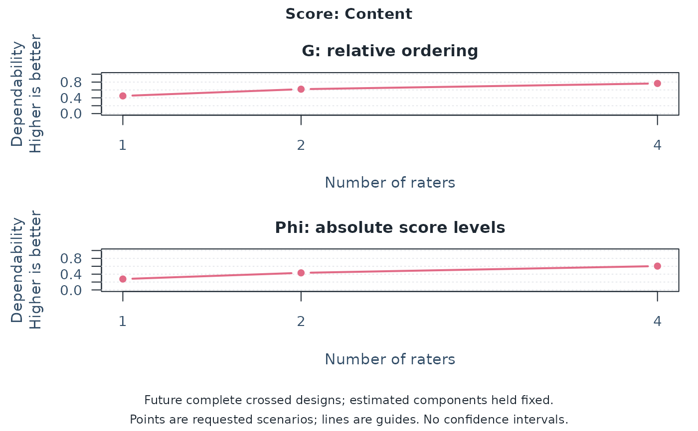
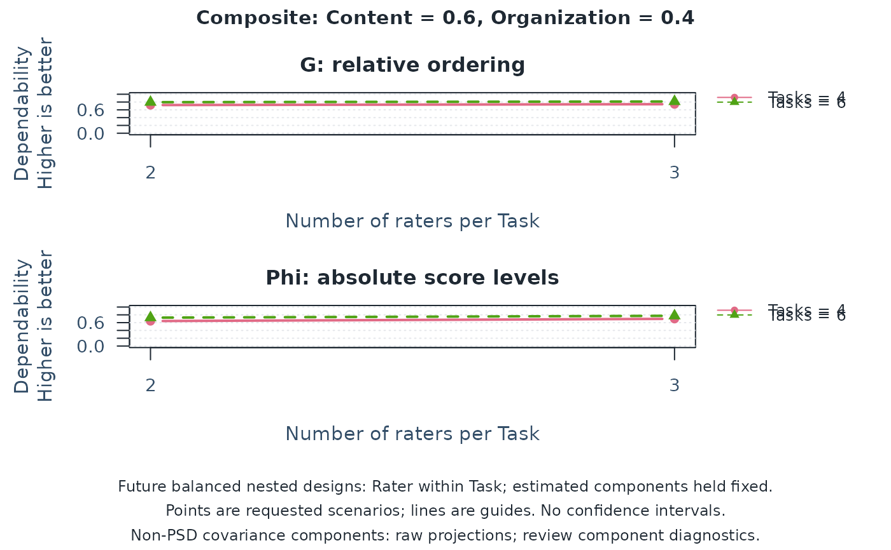
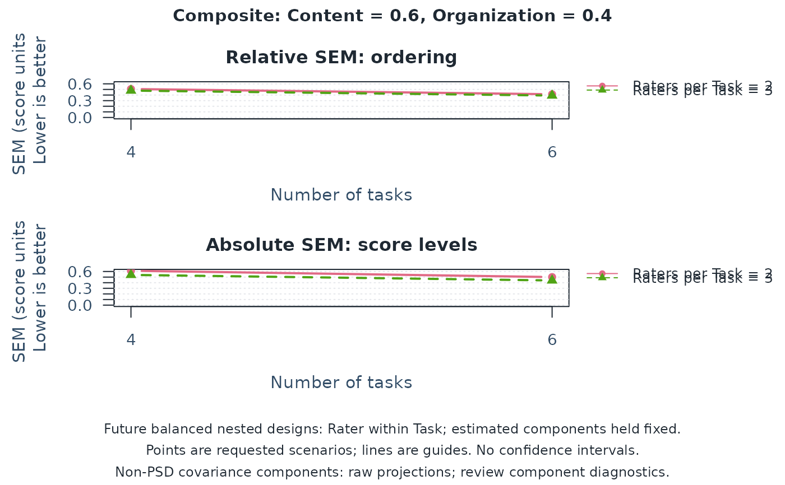

Multivariate G-study for crossed or nested rating data
Source:R/api-multivariate-gtheory.R
mfrm_multivariate_gstudy.RdEstimate observed-score variance-covariance components for fixed score components with one or two common random measurement facets, such as raters, tasks, or occasions. Use balanced ANOVA for a complete design or explicitly select MINQUE(0) for incomplete or unequal observed designs. Conditions have common identities across persons and scores. This is not an MFRM fit.
Usage
mfrm_multivariate_gstudy(
data,
scores,
person = "Person",
rater = "Rater",
task = "Task",
method = c("anova", "minque0"),
missing = c("error", "omit"),
facets = NULL,
nesting = NULL
)
# S3 method for class 'mfrm_multivariate_gstudy'
print(x, ...)
# S3 method for class 'mfrm_multivariate_gstudy'
summary(object, ...)Arguments
- data
A data frame with at most one row per observed combination of person and selected facet identifiers. Do not add rows for unassigned cells or code absent scores as zero.
- scores
Names of finite numeric score columns, in the desired order. A single column is allowed as the univariate special case. Scores are neither standardized nor converted from category labels.
- person, rater, task
Distinct columns identifying persons and facets. By default both rater and task facets are included. Set
rater = NULLfor Person-by-Task, ortask = NULLfor Person-by-Rater. At least one facet is required. Each included factor must have at least two observed levels. Labels may be character, factor, finite numeric, or logical. Blank or infinite labels fail; missing labels followmissing.- method
"anova"(default) requires a complete balanced design."minque0"estimates the same covariance components from a complete or incomplete or unequal design using identity-working-covariance MINQUE. Neither method constrains covariance estimates to be positive semidefinite.- missing
"error"(default) refuses missing selected scores or factor identifiers."omit"explicitly excludes any such row from every score's analysis and retains exclusion accounting. It does not impute values or correct missing-data bias. Infinite/nonnumeric scores are always refused.- facets
Optional character vector selecting one or two common random facets instead of
rater/task, for examplec(Rater = "Assessor", Occasion = "Session"). Values identify data columns; names label covariance components, D-study count columns, and plots. An unnamed vector uses the column names as labels. Labels must be unique and nonblank, contain no:, and not use reserved result names such asPerson,Residual,Score,Scenario, or plotting fields. Do not supplyraterortasktogether withfacets.personandscoresremain explicit.NULLpreserves the task/rater interface.- nesting
Optional named character vector specifying one measurement facet nested within the other, for example
c(Rater = "Task"). The name is the child facet label and the value is its parent label; withfacets, use its labels rather than input column names. Persons remain crossed with these conditions. Child identities are local to each parent: R1 within Task 1 differs from R1 within Task 2.NULL(default) specifies crossed facets. See "Nested measurement facets" below.- x, object
A result from the corresponding G-study or D-study function.
- ...
Reserved for method compatibility.
Value
An mfrm_multivariate_gstudy list with components (three, five, or seven
named covariance matrices), ANOVA mean_products and degrees_of_freedom
(NULL for MINQUE), estimation (MINQUE moment matrices and diagnostics,
NULL for ANOVA), data_usage (input/used/excluded counts, excluded input
row positions and missing cells),
component_diagnostics, score_scale (observed SDs used only for matrix
diagnostics), design (facets maps facet labels to input columns and
count_columns maps those labels to D-study columns; also levels, counts, method, and
score convention, nesting, child_counts, completeness, balance,
potential cells and observed cell fraction), and data
(the retained selected input columns).
Details
Every retained cell must have every selected score. Duplicate cells are not supported. The same identifier (parent/child pair for a nested child) must denote the same condition across persons and scores. Equal level counts alone cannot establish that identity or random sampling from the intended universe.
Choose facets from the intended use of scores: common raters for judging
performances, common tasks for sampling content, or common occasions for
repeat assessments. All selected facets are random and, unless nesting
is supplied, fully crossed; method = "minque0" permits incomplete observations
of that model. Naming a column Occasion does not model growth, practice,
trends, or serial correlation. Its levels must be defensibly treated as
exchangeable conditions under the stated random-effects assumptions.
Score columns are fixed components of the assessment, not another random
facet. Three or more facets, fixed measurement facets, nesting within
persons, and partial sharing across score components are not supported.
MINQUE(0) models a common mean for each score and independent, zero-mean
random effects with a common covariance matrix for each component. With
intercept-removal matrix H and shared-level covariance kernels K_s, it
solves S_st = tr(H K_s H K_t) against Q_s = Y' H K_s H Y for every
score pair. Group-count calculations avoid an observation-by-observation
matrix or a full Cartesian grid. On balanced data it agrees with ANOVA.
It does not optimize a likelihood, fit covariate-dependent means, or
iteratively estimate working covariance weights.
The diagonally scaled moment system must have all eigenvalues above
sqrt(.Machine$double.eps) times its largest eigenvalue. Otherwise the
function stops because the components cannot be separated reliably by
these equations. estimation retains the rank, scaled eigenvalues,
condition number, and per-component replication counts. These are design
and numerical diagnostics, not precision estimates or model-fit tests.
Graph connectedness alone does not establish component identifiability.
For example, four tasks scored by two distinct raters per performance
and eight tasks scored once have the same per-person workload. Only the
former provides repeated ratings within a Person/Task cell; with one
rating per cell, Person-by-Task and residual variation cannot be separated
in the seven-component model. Other overlaps are still needed for the
remaining components. Uneven workloads across raters can also affect
precision even when the moment system has full rank.
Conditioning on the observed assignments must preserve the stated
random-effect means and covariances. Outcome-dependent assignment or
missingness may violate this assumption; calling missingness MAR does
not correct omitted covariates or selection. Review planned assignments
separately from recorded scores, for example with describe_mfrm_data()
and its expected_design argument. design$observed_fraction uses the
cross-product of retained observed levels for crossed facets, or persons
times the number of observed parent/child pairs for nested facets. It is not an assignment
completion rate and cannot reveal entirely unobserved persons or facets.
With crossed rater and task facets, the seven components are Person, Rater, Task, Person:Rater,
Person:Task, Rater:Task, and Residual. With one observation per cell,
Residual combines the three-way interaction and within-cell error;
they cannot be separated. With one facet, the three components are
Person, the facet, and Residual; the last combines Person-by-facet
interaction and within-cell error. Labels supplied in facets replace
Rater/Task in these component names. Omitting a facet does not remove its
effects from scores or support generalization to new conditions of that facet. No
scores are averaged automatically. Each component is a matrix whose
diagonal contains variances and whose off-diagonal contains covariances between
scores. For ANOVA, mean products replace the mean squares used for a
single score.
Raw component estimates, including negative variances and indefinite
matrices, are retained without clipping or nearest-PSD repair. The
component_diagnostics assess eigenvalues after scaling by the observed
score SDs, using a relative numerical tolerance. This is a numerical
admissibility check, not a significance test or precision assessment.
Rank-deficient components are reported. mfrm_multivariate_d_study()
retains raw projected variances and evaluates each score/composite and
metric separately. A non-PSD component does not automatically withhold
coefficients: for example, Rater-by-Task does not enter relative error.
D-study tables and plots flag non-PSD components even when a requested
projection can be calculated. Inspect these diagnostics before using it.
Non-PSD estimates can arise from sampling variation even under a correctly
specified model, particularly when a true component is small or zero.
They do not by themselves prove bad data, informative missingness, or
model misspecification. Automatic clipping or deleting a component would
change the estimation procedure and is not performed.
Distinguish estimation$rank, the number of separable components, from
component_diagnostics$Rank, the rank of each between-score covariance
matrix. A true zero covariance component can have matrix rank zero
while the design still separates that component from the others.
The model concerns numeric observed scores. Treating ordered categories as numeric does not estimate latent ordinal or MFRM reliability. The mGENOVA Appendix E example checks balanced numerical calculations; MINQUE(0) additionally agrees with direct covariance-kernel calculations for incomplete designs. These checks do not establish population recovery for arbitrary sparse assignments or missingness mechanisms. This function returns point estimates, not sampling intervals.
Nested measurement facets
Suppose each task has its own rater team, and each team rates the same
persons on both Content and Organization. Use nesting = c(Rater = "Task")
for Person crossed with Rater-within-Task. The five components are
Person, Task, Rater(Task), Person:Task, and Residual. The last
combines Person-by-Rater-within-Task interaction and within-cell error.
There is no separately estimated common Rater or Rater-by-Task component.
A rater who actually works across tasks is not an independent nested
rater; changing their identifier cannot establish independence.
ANOVA requires all persons at every observed parent/child combination and the same number of children per parent. MINQUE(0) also permits missing cells and unequal child counts when its moment equations separate the five components. Having only one child per parent confounds parent and child components. Neither method corrects informative assignments.
design$counts["Rater"] is the total number of distinct task/rater
pairs; design$child_counts gives the rater count within each task.
design$levels retains the original labels, interpreted locally for the
child facet. A design is complete when every person has every observed
nested condition, and balanced when it also has equal child counts.
In a future D-study, Raters instead means raters per task: two raters
for each of six tasks use twelve distinct raters and twelve ratings per
person. Future designs preserve this nesting and have equal child counts.
Other two-facet names and the opposite nesting direction follow the same
rules; nesting within persons and score-specific child identities do not.
Reviewing incomplete designs
Begin with the planned roster and data_usage to distinguish unassigned
cells from missing assigned ratings. Then inspect estimation for
component separation and replication, component_diagnostics for
covariance admissibility, and the D-study metric-specific status columns
(GStatus, PhiStatus, RelativeSEMStatus, AbsoluteSEMStatus) before
reading the corresponding result. None of these checks estimates sampling
precision or identifies the missingness mechanism. No fixed percentage of observed cells,
condition-number cutoff, or passed matrix check establishes adequate
precision. D-studies project future complete balanced designs. The separate
mfrm_multivariate_d_compare() offers approximate normal-theory intervals
for prespecified differences in two-facet crossed designs; nested-design
intervals are not currently available.
For the same rating workload, changing rater overlap or concentrating assignments can change estimation precision. Omitting ratings selected by their scores can introduce bias even when every requested coefficient is calculable. Neither a returned coefficient nor agreement with another program determines whether these assumptions suit the user's assessment. Observed pool sizes concern estimation in the G-study; they differ from the per-person counts in a future D-study scenario. Review which tasks and raters are shared and whether recorded ratings represent the intended population and conditions before interpreting a projected improvement.
References
Brennan, R. L. (2001). Generalizability theory. Springer. Chapters 9–11. Brennan, R. L. (2001). Manual for mGENOVA, Version 2.1. Iowa Testing Programs Occasional Papers, No. 50. Pages 7–8 and 19–22; Table 12 (page 32) and Appendix E (pages 74–77).
Brennan, R. L. (1992). Generalizability theory. Educational Measurement: Issues and Practice, 11(4), 27–34. Equations 13–16 and Table 3.
Rao, C. R. (1971). Estimation of variance and covariance components–MINQUE theory. Journal of Multivariate Analysis, 1, 257–275. doi:10.1016/0047-259X(71)90001-7 .
Examples
# Common tasks, without a rater facet: Brennan's published synthetic data.
# mGENOVA manual Table 12: 10 persons, 6 common items, two scores V and W.
# The item facet is named Task in the supplied long-format data.
tasks <- read.csv(system.file("extdata", "mgenova-table12.csv", package = "mfrmr"))
g_task <- mfrm_multivariate_gstudy(tasks, c("V", "W"), rater = NULL)
g_task$components
#> $Person
#> V W
#> V 0.3681481 0.3192593
#> W 0.3192593 0.3688889
#>
#> $Task
#> V W
#> V 0.34444444 0.09185185
#> W 0.09185185 0.32000000
#>
#> $Residual
#> V W
#> V 1.2522222 0.7048148
#> W 0.7048148 1.5366667
#>
d_task <- mfrm_multivariate_d_study(g_task,
design_grid = data.frame(Tasks = c(6, 12)), weights = c(V = -1, W = 1))
d_task$coefficients
#> Scenario Tasks Kind Score UniverseVariance RelativeErrorVariance
#> 1 1 6 Score V 0.36814815 0.2087037
#> 2 1 6 Score W 0.36888889 0.2561111
#> 3 1 6 Composite Composite 0.09851852 0.2298765
#> 4 2 12 Score V 0.36814815 0.1043519
#> 5 2 12 Score W 0.36888889 0.1280556
#> 6 2 12 Composite Composite 0.09851852 0.1149383
#> AbsoluteErrorVariance G Phi RelativeSEM AbsoluteSEM Status
#> 1 0.2661111 0.6382022 0.5804380 0.4568410 0.5158596 Available
#> 2 0.3094444 0.5902222 0.5438165 0.5060742 0.5562773 Available
#> 3 0.3100000 0.3000000 0.2411605 0.4794544 0.5567764 Available
#> 4 0.1330556 0.7791495 0.7345280 0.3230354 0.3647678 Available
#> 5 0.1547222 0.7423141 0.7045093 0.3578485 0.3933475 Available
#> 6 0.1550000 0.4615385 0.3886048 0.3390255 0.3937004 Available
#> GStatus PhiStatus RelativeSEMStatus AbsoluteSEMStatus ComponentPSD
#> 1 Available Available Available Available TRUE
#> 2 Available Available Available Available TRUE
#> 3 Available Available Available Available TRUE
#> 4 Available Available Available Available TRUE
#> 5 Available Available Available Available TRUE
#> 6 Available Available Available Available TRUE
# At six tasks, W - V has G = 0.30000 and Phi = 0.24116 (Appendix E).
# An illustrative incomplete assignment roster, not a missingness model.
sparse <- tasks[(tasks$Person + tasks$Task) %% 3 != 0, ]
sparse$V[1] <- NA_real_ # One assigned score is additionally unrecorded.
g_sparse <- mfrm_multivariate_gstudy(sparse, c("V", "W"), rater = NULL,
method = "minque0", missing = "omit")
g_sparse$data_usage
#> $source
#> [1] "data"
#>
#> $missing
#> [1] "omit"
#>
#> $counts
#> InputRows UsedRows ExcludedRows
#> 40 39 1
#>
#> $excluded_rows
#> 1
#> 1
#>
#> $missing_cells
#> InputRow Column
#> 1 1 V
#>
g_sparse$estimation$component_support
#> Source Groups MinimumRows MaximumRows
#> 1 Person 10 3 4
#> 2 Task 6 6 7
#> 3 Residual 39 1 1
g_sparse$component_diagnostics
#> Source MinimumScaledEigenvalue Tolerance PositiveSemidefinite Rank
#> 1 Person -0.02557266 1.490116e-08 FALSE 1
#> 2 Task 0.05425167 1.490116e-08 TRUE 2
#> 3 Residual 0.22135443 1.490116e-08 TRUE 2
#> Dimension
#> 1 2
#> 2 2
#> 3 2
# Explicit future COMPLETE designs, not reliability of the sparse roster.
d_sparse <- mfrm_multivariate_d_study(g_sparse,
data.frame(Tasks = c(6, 12)), weights = c(V = -1, W = 1))
d_sparse$coefficients # Read metric status and ComponentPSD separately.
#> Scenario Tasks Kind Score UniverseVariance RelativeErrorVariance
#> 1 1 6 Score V 0.64917728 0.10873647
#> 2 1 6 Score W 0.42446102 0.23945547
#> 3 1 6 Composite Composite -0.08246487 0.20634450
#> 4 2 12 Score V 0.64917728 0.05436824
#> 5 2 12 Score W 0.42446102 0.11972774
#> 6 2 12 Composite Composite -0.08246487 0.10317225
#> AbsoluteErrorVariance G Phi RelativeSEM AbsoluteSEM
#> 1 0.2800162 0.8565319 0.6986460 0.3297521 0.5291656
#> 2 0.2673780 0.6393289 0.6135257 0.4893419 0.5170860
#> 3 0.3271971 NA NA 0.4542516 0.5720115
#> 4 0.1400081 0.9227225 0.8225916 0.2331700 0.3741766
#> 5 0.1336890 0.7799886 0.7604784 0.3460170 0.3656350
#> 6 0.1635986 NA NA 0.3212044 0.4044732
#> Status GStatus PhiStatus
#> 1 Available Available Available
#> 2 Available Available Available
#> 3 Partially available Negative universe variance Negative universe variance
#> 4 Available Available Available
#> 5 Available Available Available
#> 6 Partially available Negative universe variance Negative universe variance
#> RelativeSEMStatus AbsoluteSEMStatus ComponentPSD
#> 1 Available Available FALSE
#> 2 Available Available FALSE
#> 3 Available Available FALSE
#> 4 Available Available FALSE
#> 5 Available Available FALSE
#> 6 Available Available FALSE
# Fictional continuous scores, with two correlated score components.
set.seed(2026)
# Here occasions are exchangeable repeat assessments, without a time trend.
ratings <- expand.grid(Person = 1:40, Assessor = 1:8, Session = 1:6)
ratings$Content <- ratings$Organization <- 0
sources <- list("Person", "Assessor", "Session", c("Person", "Assessor"),
c("Person", "Session"), c("Assessor", "Session"), c("Person", "Assessor", "Session"))
for (source in sources) {
group <- interaction(ratings[source], drop = TRUE)
effect <- matrix(rnorm(2 * nlevels(group)), ncol = 2)
effect <- effect %*% matrix(c(1, 0, 0.4, 1), 2)
ratings[c("Content", "Organization")] <-
ratings[c("Content", "Organization")] + effect[as.integer(group), ]
}
g <- mfrm_multivariate_gstudy(ratings, c("Content", "Organization"),
facets = c(Rater = "Assessor", Occasion = "Session"))
g$components$Person
#> Content Organization
#> Content 0.99485883 -0.01085374
#> Organization -0.01085374 0.84326607
g$component_diagnostics
#> Source MinimumScaledEigenvalue Tolerance PositiveSemidefinite
#> 1 Person 0.09487209 1.490116e-08 TRUE
#> 2 Rater 0.06803699 1.490116e-08 TRUE
#> 3 Occasion 0.05954273 1.490116e-08 TRUE
#> 4 Person:Rater 0.09383470 1.490116e-08 TRUE
#> 5 Person:Occasion 0.08755451 1.490116e-08 TRUE
#> 6 Rater:Occasion 0.08178259 1.490116e-08 TRUE
#> 7 Residual 0.08930682 1.490116e-08 TRUE
#> Rank Dimension
#> 1 2 2
#> 2 2 2
#> 3 2 2
#> 4 2 2
#> 5 2 2
#> 6 2 2
#> 7 2 2
d <- mfrm_multivariate_d_study(g,
design_grid = data.frame(Rater = c(2, 4), Occasion = c(3, 3)),
weights = c(Content = 0.6, Organization = 0.4))
d$coefficients
#> Scenario Rater Occasion Kind Score UniverseVariance
#> 1 1 2 3 Score Content 0.9948588
#> 2 1 2 3 Score Organization 0.8432661
#> 3 1 2 3 Composite Composite 0.4878620
#> 4 2 4 3 Score Content 0.9948588
#> 5 2 4 3 Score Organization 0.8432661
#> 6 2 4 3 Composite Composite 0.4878620
#> RelativeErrorVariance AbsoluteErrorVariance G Phi RelativeSEM
#> 1 0.9827757 1.7487735 0.5030549 0.3626065 0.9913504
#> 2 1.1448977 3.2743907 0.4241432 0.2047927 1.0699989
#> 3 0.7159511 1.5528205 0.4052639 0.2390680 0.8461390
#> 4 0.6513067 1.1402400 0.6043492 0.4659545 0.8070358
#> 5 0.7846464 1.9864701 0.5180046 0.2980017 0.8858027
#> 6 0.4863208 0.9421409 0.5007910 0.3411615 0.6973671
#> AbsoluteSEM Status GStatus PhiStatus RelativeSEMStatus AbsoluteSEMStatus
#> 1 1.3224120 Available Available Available Available Available
#> 2 1.8095277 Available Available Available Available Available
#> 3 1.2461222 Available Available Available Available Available
#> 4 1.0678202 Available Available Available Available Available
#> 5 1.4094219 Available Available Available Available Available
#> 6 0.9706394 Available Available Available Available Available
#> ComponentPSD
#> 1 TRUE
#> 2 TRUE
#> 3 TRUE
#> 4 TRUE
#> 5 TRUE
#> 6 TRUE
# Difference-score dependability, when subtraction is meaningful on these scales.
difference <- mfrm_multivariate_d_study(g,
weights = c(Content = 1, Organization = -1))
difference$coefficients
#> Scenario Rater Occasion Kind Score UniverseVariance
#> 1 1 8 6 Score Content 0.9948588
#> 2 1 8 6 Score Organization 0.8432661
#> 3 1 8 6 Composite Composite 1.8598324
#> RelativeErrorVariance AbsoluteErrorVariance G Phi RelativeSEM
#> 1 0.3061278 0.529453 0.7646956 0.6526610 0.5532882
#> 2 0.3679117 0.949421 0.6962364 0.4703922 0.6065573
#> 3 0.4270026 1.063088 0.8132779 0.6362926 0.6534543
#> AbsoluteSEM Status GStatus PhiStatus RelativeSEMStatus AbsoluteSEMStatus
#> 1 0.7276352 Available Available Available Available Available
#> 2 0.9743823 Available Available Available Available Available
#> 3 1.0310614 Available Available Available Available Available
#> ComponentPSD
#> 1 TRUE
#> 2 TRUE
#> 3 TRUE
# Rater-only planning for one occasion; no generalization across occasions.
one_session <- ratings[ratings$Session == 1, ]
g_rater <- mfrm_multivariate_gstudy(one_session, c("Content", "Organization"),
rater = "Assessor", task = NULL)
d_rater <- mfrm_multivariate_d_study(g_rater, data.frame(Raters = c(1, 2, 4)))
plot(d_rater, score = "Content")

# Different rater teams for different tasks; shared persons and scores.
# Fictional continuous scores with five independent random-effect sources.
set.seed(2027)
nested <- expand.grid(Person = 1:30, Task = 1:6, Rater = paste0("R", 1:3))
nested$Content <- nested$Organization <- 0
sources <- list("Person", "Task", c("Task", "Rater"),
c("Person", "Task"), c("Person", "Task", "Rater"))
for (source in sources) {
group <- interaction(nested[source], drop = TRUE)
effect <- matrix(rnorm(2 * nlevels(group)), ncol = 2)
effect <- effect %*% matrix(c(1, 0, 0.4, 1), 2)
nested[c("Content", "Organization")] <-
nested[c("Content", "Organization")] + effect[as.integer(group), ]
}
g_nested <- mfrm_multivariate_gstudy(nested, c("Content", "Organization"),
nesting = c(Rater = "Task"))
g_nested$design$child_counts # Three raters per task; eighteen in total.
#> 1 2 3 4 5 6
#> 3 3 3 3 3 3
g_nested$component_diagnostics
#> Source MinimumScaledEigenvalue Tolerance PositiveSemidefinite Rank
#> 1 Person 0.1787157 1.490116e-08 TRUE 2
#> 2 Task -0.1005764 1.490116e-08 FALSE 1
#> 3 Rater(Task) 0.1047607 1.490116e-08 TRUE 2
#> 4 Person:Task 0.1326551 1.490116e-08 TRUE 2
#> 5 Residual 0.1583285 1.490116e-08 TRUE 2
#> Dimension
#> 1 2
#> 2 2
#> 3 2
#> 4 2
#> 5 2
d_nested <- mfrm_multivariate_d_study(g_nested,
expand.grid(Raters = c(2, 3), Tasks = c(4, 6)),
weights = c(Content = 0.6, Organization = 0.4))
summary(d_nested)
#> Scenario Raters Tasks Kind Score UniverseVariance
#> 1 1 2 4 Score Content 0.9534770
#> 2 1 2 4 Score Organization 1.3735013
#> 3 1 2 4 Composite Composite 0.6695763
#> 4 2 3 4 Score Content 0.9534770
#> 5 2 3 4 Score Organization 1.3735013
#> 6 2 3 4 Composite Composite 0.6695763
#> 7 3 2 6 Score Content 0.9534770
#> 8 3 2 6 Score Organization 1.3735013
#> 9 3 2 6 Composite Composite 0.6695763
#> 10 4 3 6 Score Content 0.9534770
#> 11 4 3 6 Score Organization 1.3735013
#> 12 4 3 6 Composite Composite 0.6695763
#> RelativeErrorVariance AbsoluteErrorVariance G Phi RelativeSEM
#> 1 0.3624642 0.6378897 0.7245590 0.5991561 0.6020500
#> 2 0.4066303 0.5819596 0.7715729 0.7023926 0.6376757
#> 3 0.2574224 0.3758917 0.7223055 0.6404560 0.5073682
#> 4 0.3191002 0.5151246 0.7492489 0.6492414 0.5648895
#> 5 0.3647127 0.4878120 0.7901796 0.7379205 0.6039145
#> 6 0.2297148 0.2905959 0.7445602 0.6973503 0.4792857
#> 7 0.2416428 0.4252598 0.7978087 0.6915584 0.4915718
#> 8 0.2710869 0.3879731 0.8351643 0.7797453 0.5206600
#> 9 0.1716150 0.2505945 0.7959858 0.7276652 0.4142644
#> 10 0.2127335 0.3434164 0.8175857 0.7352008 0.4612304
#> 11 0.2431418 0.3252080 0.8496008 0.8085558 0.4930941
#> 12 0.1531432 0.1937306 0.8138574 0.7755948 0.3913351
#> AbsoluteSEM Status GStatus PhiStatus RelativeSEMStatus
#> 1 0.7986800 Available Available Available Available
#> 2 0.7628628 Available Available Available Available
#> 3 0.6131001 Available Available Available Available
#> 4 0.7177218 Available Available Available Available
#> 5 0.6984354 Available Available Available Available
#> 6 0.5390694 Available Available Available Available
#> 7 0.6521195 Available Available Available Available
#> 8 0.6228748 Available Available Available Available
#> 9 0.5005941 Available Available Available Available
#> 10 0.5860174 Available Available Available Available
#> 11 0.5702701 Available Available Available Available
#> 12 0.4401484 Available Available Available Available
#> AbsoluteSEMStatus ComponentPSD
#> 1 Available FALSE
#> 2 Available FALSE
#> 3 Available FALSE
#> 4 Available FALSE
#> 5 Available FALSE
#> 6 Available FALSE
#> 7 Available FALSE
#> 8 Available FALSE
#> 9 Available FALSE
#> 10 Available FALSE
#> 11 Available FALSE
#> 12 Available FALSE
plot(d_nested, x_var = "Raters") # Raters on the axis means raters PER TASK.

plot(d_nested, x_var = "Tasks", type = "sem")
